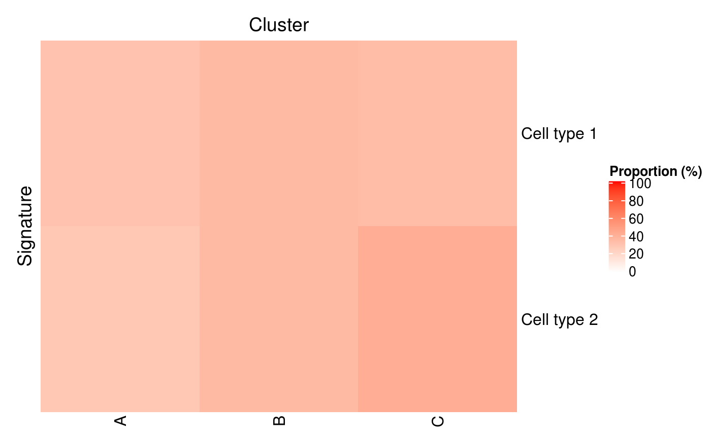

R/plot-methods.R, R/predict-methods.R
predictByProportionPositive.RdThe predictByProportionPositive() function computes the proportion of samples positive for each signature in each (predefined) cluster
and identifies the predominant signature in each cluster.
The function stores information tracing the prediction process in the metadata slot. See Details.
plotProportionPositive(se, ..., row_title = "Cluster", row_title_side = "left", column_title = "Signature", column_title_side = "top") predictByProportionPositive(object, se, cluster.col, assay.type = "counts", threshold = 0)
| se | An object of class inheriting from |
|---|---|
| ... | Additional arguments to be passed to methods. |
| row_title, row_title_side, column_title, column_title_side | See |
| object | A collection of signatures inheriting from |
| cluster.col | Name of a column in |
| assay.type | A string specifying which assay values to use, e.g., |
| threshold | Value above which the marker is considered detected. |
The object se, updated as follows:
in the metadata slot, a "hancock" item is added (or updated) with information tracing the prediction process. See Details.
in the colData slot, a DataFrame is nested in a new (or updated) "hancock" column.
This DataFrame contains predicted labels in the first and only column.
The function populates the "hancock" element of the metadata slot with the following fields and values:
"GeneSets"Signatures used to make the predictions
"method"Name of the method used to make the predictions
"packageVersion"hancock version used to make the predictions
"ProportionPositiveByCluster"Matrix indicating the proportion of samples in each cluster that are positive for each signature.
"TopSignatureByCluster"Named vector indicating the predominant signature for each cluster.
plotProportionPositive: Returns a Heatmap displaying the proportion (on a scale from 0 to 100) of samples that are positive for each individual signature in each cluster.
# Example data ---- library(SummarizedExperiment) nsamples <- 100 u <- matrix(rpois(20000, 1), ncol=nsamples) rownames(u) <- paste0("Gene", sprintf("%03d", seq_len(nrow(u)))) colnames(u) <- paste0("Cell", sprintf("%03d", seq_len(ncol(u)))) se <- SummarizedExperiment(assays=list(counts=u)) bs <- BaseSets( relations=DataFrame( element = c("Gene001", "Gene002", "Gene003", "Gene004"), set = c(rep("Cell type 1", 2), rep("Cell type 2", 2)) ) ) colData(se)[, "cluster"] <- factor(sample(head(LETTERS, 3), ncol(se), replace=TRUE)) # Example usage ---- library(circlize)#> #> #> #> #> #> #> #> #> #># Identify the dominant signature in each cluster se <- predictByProportionPositive(bs, se, cluster.col="cluster") # Visualise the proportion of samples positive for each signature in each cluster plotProportionPositive( se, cluster_rows=FALSE, cluster_columns=FALSE, col=colorRamp2(c(0, 100), c("white", "red")))